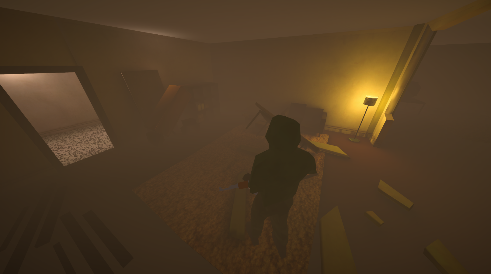
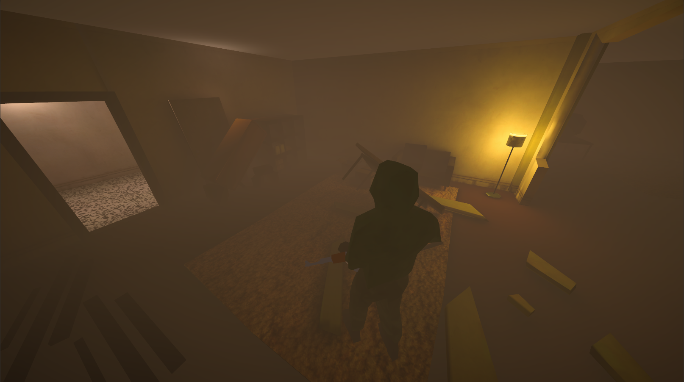

2D-elementit ja 3D-mallinnus
Suurin osa 3D-malleista joita tein on pienempiä "assetteja" joita ripotellaan kentälle koristamaan ja
luomaan immersiota maailmaan. Näihin lukeutuu mm. pahvilaatikot, matot, tölkit, lamput, ilmanvaihtokanavat ja muut
vastaavanlaiset arkipäiväisemmät objektit. Osasin käsitellä Blenderiä joten kuten ennen kuin aloitimme projektin, mutta
osaamiseni Blenderin kanssa on parantunut huomattavasti -- työn tekeminen on nopeampaa ja sulavampaa. Olen oppinut sekä uusien
työkalujen että sisäänrakennettujen muuttujien käyttämistä. Suurimpana oppina näkisin kuitenkin materiaalien ja
tektuurien tekemisen sekä niiden "bakeemisen" malliin. Ennen projektia ei malleissani oikein ollut mitään
muuta kuin mattavärejä, nyt osaan luoda proseduraalista ruostetta, puulle ominaista kuviota tai vaikka asfaltille
kuuluvaa kivistä tekstuuria.
Ohessa on ensimmäisiä yrityksiä UV-wrappingin ja teksturoinnin kanssa.

Tein kaiken kaikkiaan yli 20 - 30 pienempää assettia, joista osaan tein itse tekstuurit ja osiin en. Alapuolella on
simppelimpää assettia johon tein värit sekä kaikki muodot, vain tekstuurit puuttuu.


Hahmomallinnukseen en koskenut enää projektin aloittamisen jälkeen. Käytimme projektissa minun alkuperäistä
hahmoa mallina josta lähtisimme eteenpäin. Hahmoni ei sopinut tyyliltään lopulliseen peliin, joten vaihdoimme mallin
sittemin kokonaan toisenlaiseen tyyliin.

Otin osaa myös 2D-elementtien toteutukseen kuten suunnitteluunkin. Suunnittelin ja sittemmin toteutin
käyttöliittymän teeman sekä grafiikat. Tein yksittäiset elementit Photoshopissa jossa splice työkalun avulla
saimme kaikki osat erikseen jotka sitten lisättiin Unityyn, jossa loimme varjot tietyille objekteille joten pystyimme huijaamaan
elementit näyttämään 3D-malleilta.
Huomio, hahmo keskellä ei ole minun mallintama
Tein myös jonkin verran sketsejä ja suunnitelmia aseista, hahmoista ja asseteista. Ohessa muutamat ideat jotka tein


 
